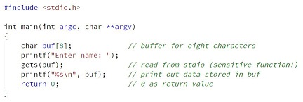
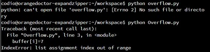
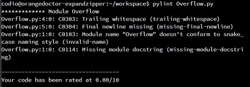

Buffers
Buffers in C
The exercise was run in the codio platform and was a simple program to create a buffer, enter values and return messages back to the console. To execute and test the code we were asked to enter simple strings (name). Once with 8 characters (within buffer limit) and 10 characters to exceed the buffer limit and to record the results.
Question 1
What happens when the string is entered within the buffer limit (8)? The string is returned to the terminal. When the string entered is greater in length than the buffer limit the terminal command exits.
Question 2
What does the output message mean? That the buffer length has been exceeded and as such the session terminates and dumps any of the data in the buffer.

Buffers in Python
The exercise was was to simulate similar buffer functionality in Python to asses the results and how the 2 languages interpret buffer responses. It utilised pylint to evaluate the output.
Question 1
What happens? Firstly from a purely technical point of view the exercise was to run a .py file that did not match the name of the file. By entering the file name with the wrong case in the terminal window it fails because of a mismatch in naming. Secondly when run with correct casing the .py file runs but fails because of an out of range index in the buffer.
Question 2
What does the output message mean and can you fix it? While pylint runs it is really evaluating the structure of the code and assesses casing, comment strings and quality of code rather than encapsulating or alerting to the potential error. What has occured is the buffer variable assigns itself an array of 10 with No integer values for the index objects. When the for loop executes with a range of 0 - 11 it is comparing the buffer value which only has 10 objects so will fail on the final loop regardless of checking the index value to 7. The index value does equal 7 once in the loop and there is no output on this and the loop continues.


Producer Consumer
Python exercise
The exercise was run in the codio environment. By having a prepared script the code could be executed to output a result. While the exercise was simplistic in it's nature to describe the use of queues and threads there were elements that could be improved.
Question 1
How is the queue data structure used to achieve the purpose of the code? It supplies a linear data structure similar to a stack. As it stores items sequentially the consumer can then take the next item in the queue.
Question 2
What is the purpose of q.put(I)? q.put[i] will add an element to the queue as well as block if a queue has reached it maximum capacity.
Question 3
What is achieved by q.get()? q.get() will remove and return an item from the queue.
Question 4
What functionality is provided by q.join()? q.join() will block the threads until the consumers have processed the elements of the queue.
Question 5
What technique(s) would be appropriate to secure the code? While not extending the code in this exercise there are several options to securing producer-consumer code. (Brownlee 2022) discusses the use of a signal shutdown where a sentinel object could be placed into the buffer by a producer acting as a clear message to consumers. This could prevent rogue input into a buffer potetnially adding more elements. Other methods could be the use of maxsize parameters to to limit the size of a queue. By setting this and adding logic in your code that controls how many elements are added to the queue you could restrict the risk of incorrectly sized queue or making it infinite leading to overflow or corruption of data.

References:
Brownlee, J. (2022) Thread Producer-Consumer Pattern in Python Available from: https://superfastpython.com/thread-producer-consumer-pattern-in-python/ [Accessed 26/8/23].